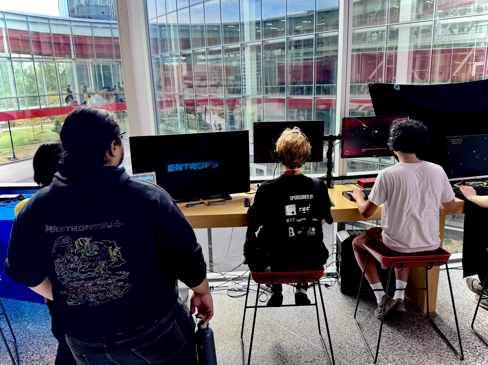
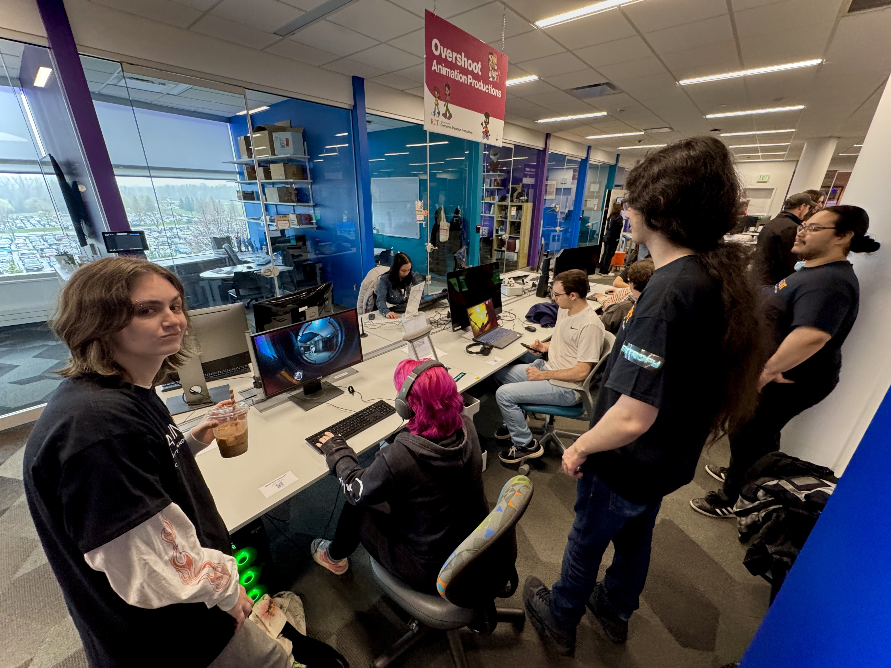
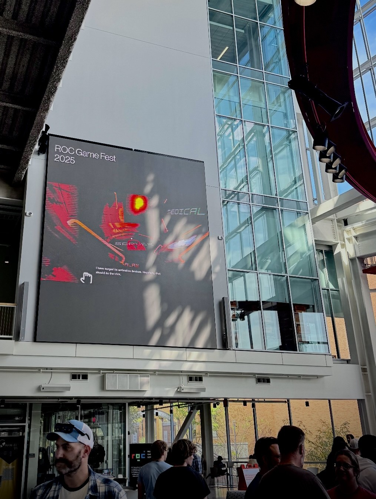

State of Entropy
A 3D, sci-fi, stalker horror game where you must navigate a derelict ship in full zero-gravity to make a repairs all the while a cosmic being lurks in the shadows
- My roles
- Project Lead, Gameplay Programmer, Narrative Writer
- Team
- 24 people
- Duration
- 1.5 years, ongoing
- Engine
- Unity
- Platform
- PC
The Game
This game follows an astronaut woken from cryosleep by their ship's onboard AI, Alan. Alan leads the player through the ship to make vital repairs, incrementally restoring its connection to terminals in place of save points.
The player progresses linearly, with environmental puzzles and hazards standing between them and escape. With full zero-gravity movement mechanics, the level design is unconventional: if you don't remain alert while floating through corridors, you will get lost.
Our stalker monster, the Geist, persistently hunts the player. Adding fear and paranoia to what would otherwise be routine maintenance tasks
How it Started
This project began as a fun, three-month class project with my three friends. Through the past year and a half, we have continued to develop it, gaining incredible opportunities and new team members.
We secured two rounds of funding through the MAGIC Maker Program, where we worked in a studio environment. There, we adopted professional standards and used an Agile workflow to deliver a prototype and our first level. We are now building the second level to complete the demo and publish it on Steam.


Programming
I own the gameplay code. These are the systems I am proudest of.
Zero-Gravity Movement
- Problem
- We wanted our game to feel unique. Inspired by films such as Gravity (2013) and Alien: Romulus (2024), we loved the horror of being vulnerable in zero gravity. I set out to build a player controller that removes conventional WASD walking and forces the player to climb along the environment to get around.
- Approach
-
- Research: I started by watching films and documentaries on zero-gravity movement and took notes that defined what the controls needed to feel believable.
- Design for fun: The game isn’t strictly realistic, so in my high concept, I chose fun over realism: ping-ponging off walls, throwing objects to push you back, and rolling to reorient. None of it works in true zero gravity, but it’s fun to play.
- Implement, then test: I made incremental upgrades, then tested them with in-house and external playtesting. This gave me consistent feedback to turn into updates. In one case, playtesting settled a team bet over whether to increase grab length. I lost that one, but agreed right away once I saw that players learned the controls more easily.
- Result
- These unconventional player controls became a pillar of our design philosophy and pushed the whole team to think creatively about designing a game with no up, down, left, or right. It led us to focus the first level on limited action, giving players more time to learn the controls. This paid off: most testers now get a handle on them in about 5 to 10 minutes. When early on, some would simply walk away from the keyboard.
Persistent Player Manager
- Problem
- Level two exposed that our player controller, and every system that references it, was tied to level one, so the player couldn’t carry over between scenes. Changes were necessary to support more levels. We also needed to update the Global Save Manager to support these improvements.
- Approach
-
- Persistent player: I parented all player objects under the Persistent GameObject with PersistentManager.cs, which holds references to the key player scripts and calls DontDestroyOnLoad () so the player survives scene loads and checkpoint reloads.
- Restoring references: Testing exposed many missing references on scene load, so I updated each script to find the PersistentManager and re-link what it needs.
- Save manager: Our architecture documentation showed the player was being recreated on every load. I added restore logic to CheckpointManager.cs and player data saving and loading in ZeroGravity.cs, triggered when checkpoints are reached and loaded.
- Packaging: After a second round of bug testing, I turned the setup into a drag-in prefab, set up level two’s checkpoints, and wrote an architecture document for the team
- Result
- The player now moves between levels while keeping momentum, orientation, health, and inventory, and the prefab drops into any new level.
public class PersistentManager: MonoBehaviour
{
[SerializeField] private ZeroGravity player;
public ZeroGravity Player => player;
[SerializeField] public InventoryManager InventoryManager;
[SerializeField] public PlayerUIManager PlayerUIManager;
[SerializeField] public WristMonitor WristMonitor;
public static PersistantManager Instance { get; set; }
private void Awake()
{
if(Instance != null && Instance != this)
{
// if persistent player already exists, destroy duplicate
Destroy(gameObject);
return;
}
Instance = this;
if(player == null)
player = GetComponentInChildren();
DontDestroyOnLoad(gameObject);
}
Leadership
Everyone on the team, me included, is a full-time student. I lead by planning around that reality, so the work stays steady and realistic over a one-and-a-half-year project.
The team
- Adam Gayheart
Project Lead (May 2025 to present): planning, recruitment, budgeting, code review
Lead Programmer (January 2026 to present): zero-gravity movement prototype, player UI manager, persistent player data, flashlight, inventory manager, final enemy AI
Narrative Writer (May 2025 to present): narrative scripts, storyboarding
Marketing Strategist (September 2025 to December 2025): marketing strategy proposal
Programming
- Aidan Kamp
Lead Programmer (May 2025 to January 2026): planning, task organization, level 1 gameplay events, enemy AI prototype - Auden Clifford
Level Designer (January 2026 to May 2026): level 2 design, level 2 gameplay events - Jacob Swihart
Gameplay Programmer (September 2026 to present): fusebox puzzle - Justin Tong
Gameplay Programmer (January 2026 to May 2026): enemy AI production - Reilly Lawson
UI Developer (May 2025 to December 2025): player ui manager production, wrist monitor, menu systems with customizable options, post-processing - Timothy Clark
Audio Programmer (January 2026 to May 2026): audio culling system, Steam audio integration
Gameplay Programmer (May 2026 to present): fire extinguisher & fire, electrical hazards, zero gravity movement final - Thomas Roman
Gameplay Systems Programmer (September 2025 to January 2026): global save manager, zero gravity movement production
Art
- Noah Kasper
Art Lead (May 2025 to January 2026): planning, task organization, art bible, level 1 room assets
Technical Artist (January 2026 to present): Ui assets, interactive UI, level lighting, map system, floating objects, creature materials & post-processing - Tobin Pederson
Art Lead (January 2026 to May 2026): planning, task organization
Concept Artist (July 2025 to October 2025): level 1 concept art, creature concept art
Character Artist (October 2025 to May 2026): creature assets - Benson Zhang
3D Environmental Artist (January 2026 to August 2026): level 2 room assets, cadaver assets - Dat Phan
3D Environmental Artist (September 2025 to December 2025): level 1 room assets, prop assets - Emery Sadler
3D Environmental Artist (September 2026 to present): level 2 room assets, prop assets - Hassan Ismail
Concept Artist (September 2026 to present): level 2 concept art - Hayden Bush-Resko
3D Environmental Artist (September 2025 to December 2025): level 1 room assets, prop assets - Jia Xin Huang
3D Environmental Artist (September 2026 to present): level 2 room assets, prop assets - Michael Rivera
3D Environmental Artist (January 2026 to August 2026): level 2 room assets, prop assets - Morgan Matthews
Character Artist (January 2026 to May 2026): cadaver concept art, character clothes assets, prop assets - Timothy Wisdom
Character Animator (September 2026 to present): creature rigging, creature animations
Audio
- Joel Pho
Audio Lead (September 2025 to May 2026): audio implementation, audio mixing
Game Composer (October 2025 to present): main title music, level 1 music, level 2 music
SFX Designer (January 2026 to August 2026): menu SFX, game mechanic SFX - Casey Blunt
SFX Designer (May 2025 to December 2025; September 2026 to present): game mechanic SFX, environmental SFX
Creature SFX Designer (May 2025 to December 2025; September 2026 to present): creature SFX - Evan Perotti
Audio Engineer (May 2025 to August 2025): game audio system, audio implementation, audio mixing
Game Composer (August 2025 to October 2025): level 1 music - Thomas Revord
Audio Programmer (September 2025 to present): audio implementation, audio mixing
Marketing
- Kayleigh Gallagher
Marketing Specialist (June 2026 to August 2026): social media management, content scheduling & creation, playtest sourcing, marketing strategy final
Supported by producers from MAGIC Spell Studios
- Aaron Nieboer
- Amanda Hughes
- Brenda Schlageter
- David Long
- David Sanchez
- Dennis McCorry
- Eva Sarachan-Dubay
- Jennifor Hinton
- Kaitlyn Rodriguez
- Vincent Lee
How we work
- Know the schedules: I track each member's classes, deadlines, and obligations so I know what people can realistically take on before I plan a cycle.
- Adapt meetings: I move meeting times to fit people's availability instead of asking people to fit the meetings.
- Scope realistically: We use Agile to size tasks to what each person can deliver under their constraints. Each cycle has four-week milestones, and each week is a sprint. We track progress on our Trello board and cross-reference it with our Gantt timeline. Weekly stand-ups let members showcase progress.
- Design before building: Every task begins with a design document where the member lays out their vision and implementation plan. I review each one and leave notes to keep the design consistent and easier to build. We archive them in Google Drive so developers in other disciplines can use them later.
- Code quality and pipeline: We use GitHub for version control. With a consolidated main branch and development branches. Branches ready for merge go through pull requests, reviewd by me before merge. Developers then explain their finalized system with technical architecture documents for future reference by other developers. Archived in our Google Drive.
Budget and funding
I managed how we spent our funding across two rounds, balancing team compensation, tools, events, and our Steam release. Each round's budget was based on the stipend we received: $1,000 in round one and $10,000 in round two.
- Planning: We set our budget for each round based on the stipend we received; in the first round, we received $1,000. The Second round: $10,000.
- Round one: We had six members, so we split the stipend equally, with $100 reserved to pay the concept artist we brought on later.
- Round two: Our core team grew to seven, with four commissioned members. I reserved half the stipend for the core team and half for commissioned members and other expenses. I scheduled payments for each of the four milestones. Core team payments were proportional to each member's weekly hours, and commissioned payments followed contracts signed and approved at the start of each milestone.
- Trello: Our team and producers' setup exceeded the free member limit, so we paid roughly $70 a month. Since the rounds, we have used separate boards per discipline to stay on the free tier.
- Events: We bought stickers in bulk for about $80 to hand out at events, and reordered as supplies ran low.
- Steam: About $700 remains, reserved for our Steam page, advertising, and promotional material.
- Tracking: I tracked each member's share and payments in a spreadsheet, with a column per milestone and checkmarks confirming payment, and kept a general ledger of every debit and credit. All easily accessible to the team.
A hard moment
The Constraint: While building the second level, the Fall semester began, and many of our artists needed to step away to focus on their capstone projects. I led outreach and recruitment to fill the gaps, and we brought on strong new artists to work as a sub-team of the art team. Their job was to create assets for a large section of the level that was fully grayboxed at the time. We found great talent, but didn't have enough to complete the space on time.
The Decision: I decided to shelve this section and prioritize the first half of the level, which features our puzzle. I reassigned the new artists to polish and add detail to areas we kept. This narrowed their tasks and gave them more time to complete their work alongside their other commitments.
The Result: The programming team also benefited. With a smaller scope, they now have time to polish our current systems. We chose a level we can finish well, over a larger one we couldn’t. The demo is better off and promises more.
Outcome and Reflection
The project has grown from a class assignment into a funded, studio-style production.
Milestones
- Secured two rounds of funding through the MAGIC Maker Program
- Delivered a prototype and a complete first level using an Agile workflow
- Currently building the second level to finish the demo for a Steam release

Events
- ROC Game Fest (2025, 2026)
- Imagine RIT (2026)
- Interactive Media Symposium (2026)
Community
- 46 community Discord members
- 226 followers on Instagram, 79 followers on TikTok, and 41 subscribers on YouTube

What I would do differently
As this was my first time leading a professional project, I needed to learn a lot of strategies and skills on the job. This caused friction for a short time until proper tracking was in place. Team roles were not concretely defined, tasks overlapped, design cohesion was weak.
On my next game project. I will structure the workflow first. I will write the high concept design document at the start and let it drive the timeline.
